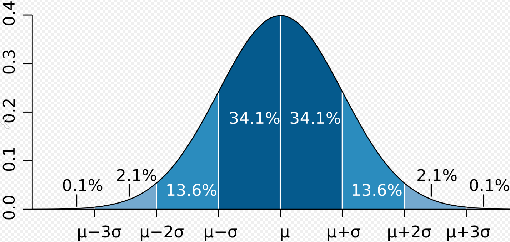

Distributions
Normal distribution (Gaussian Distribution), \(X \sim N(\mu, \sigma^2)\)
A symmetric, bell-shaped distribution for Continuous Random Variables that models measurement error, intelligence/ability, height, averages of lots of data

Tip
The probability of a random variable falling within
- 1 Standard Deviation is 68.2% i.e., 68.2% of the normal distribution area is between standard deviation -1 and 1
- 2 Standard Deviations is 95.4% i.e., 95.4% of the normal distribution area is between standard deviation -2 and 2
- 3 Standard Deviations is 99.7% i.e., 99.7% of the normal distribution area is between standard deviation -3 and 3
Also see z-score tip and Z-Values for Common Confidence Levels
Symmetric distribution: The distribution’s mean and median are at the very center of the distribution, with an equal about of data to the left and right
Skewed distribution: A non-symmetric distribution that leans right or left.
Note
- Negatively/left-skewed/left-tailed distributions have their tail on the left
- Mean < Median < Mode
- Positively/right-skewed/right-tailed distributions have their tail on the right
- Mean > Median > Mode
Outliers
Expression
Low outliers: \(Q1 - 1.5(IQR)\)
High outliers: \(Q3 + 1.5(IQR)\)
When we have a data set with outliers that skew the data,
- the median will be a better measure of central tendency than the mean
- the interquartile range will be a better measure of spread than standard deviation
That’s because mean and standard deviation will take into account all points in the data set, including the outliers. But median and IQR can ignore these outliers, giving us more accurate measurements of the data.
Z-Scores
The z-score for a data point x is the score that tells us the number of standard deviations between between x and the mean of μ.
- Use z-score to find out the probability(p-value) of finding a random point in a normal distribution.
- Use z score tables (also known as Standard normal curve table) to find the probability corresponding to a given z score.
- The probability values in the table represent the probability of finding the point in the entire area to the left of the point.
- In order to find the probability between the mean (which is 0 for normal distribution and will be at the 50% mark) and the point, subtract 50 from the probability value shown in the table.
- Data points that are less than the mean will be to the left of the mean and will have a negative z-score. They should be looked up in the table of negative z-scores
- Data points that are greater than the mean will be to the right of the mean and will have a positive z-score. They should be looked up in the table of positive z-scores
- The z-table always gives us the percentage of data that is below our data point. Therefore, to find the percentage of data above our data point, we have to take 1 minus the value from the table
- z score tables can also be used to find the z row and column values (z critical value) corresponding to the percentile
Critical Values
The z-critical value, \(z_\alpha\) is the \(100(1 - \alpha)\)th percentile of the standard normal distribution
- We can use qnorm to find the z critical values : \(z_{0.05} = qnorm(0.95, 0,1)\)
-
For finding the z-critical value corresponding to \(\alpha\) = 5 find the row and column corresponding to .95 (this will be equal to 1.64)
Tip
- 95% of the area of standard normal distribution is within (to the left of) \(Z = 1.64\)
- 99.5% of the area of standard normal distribution is within (to the left of) \(Z = 2.58\)
- 68% of the area is within 1 standard deviation of the mean, \(P(-1 \leq Z \leq 1) = .6826\)
- 95% is within 2 standard deviations, \(P(-2 \leq Z \leq 2) \approx .95\) ; more precisely \(P(-1.96 \leq Z \leq 1.96) = .95\)
- 99% is within \(P(-2.58 \leq Z \leq 2.58)\) ; more precisely \(P(-2.58 \leq Z \leq 2.58) = .9902\)
- 99.7% is within 3 standard deviations, \(P(-3 \leq Z \leq 3) \approx .997\) ; more precisely \(P(-3.29 \leq Z \leq 3.29) = .999\)
- \(P(Z \lt 1) \approx 0.8413\)
- \(P(Z \lt 2) \approx 0.9772\)
- \(P(Z \lt 3) \approx 0.9987\)
Also see normal distribution tip and Z-Values for Common Confidence Levels
-
Use pnorm with z value as parameter to get the corresponding percentile and use qnorm with the percentile to get the corresponding z value
- If the z-critical value falls in the rejection region, we reject the Null Hypothesis
- z-critical value, \(z_ {\alpha/2}\) for the upper tail is the right critical value (\(P(Z \gt \alpha/2) = \alpha/2\)) and that for the lower tail is the left critical value (\(P(Z \lt \alpha/2) = - \alpha/2)\)
- \(\pm z_ {\alpha/2}\) are also referred to as the boundaries of the region of rejection
Chebyshev’s Theorem
For all \(k \gt 1\), at least \((1 - \frac{1}{k^2})\)% of our data must be within \(k\) standard deviations of the mean, regardless of the shape of the data’s distribution.
Info
- At least 75 % of the data must be within k = 2 standard deviations of the mean.
- At least 89 % of the data must be within k = 3 standard deviations of the mean.
- At least 94 % of the data must be within k = 4 standard deviations of the mean.
Binomial Distribution, \(X \sim Bin(n,p)\)
This type of distribution is based on Binomial Variables (Discrete RV)
Suppose we are repeating an experiment having only two outcomes \(\{\text{success},\text{failure}\}\), \(n\) times in such are way that their outcomes are independent where \(p = P(\text{success})\), then the probability of \(x\) successes in \(n\) trials is given by the Binomial Probability
Geometric Distribution
This type of distribution is based on Geometric Variables (Discrete RV)
Also see Geometric Probability.
Poisson Distribution
Poisson process: Calculates the number of times an event occurs in a period of time, or in a particular area, or over some distance, or within any other kind of measurement.
- The experiment counts the number of occurrences of an event over some other measurement,
- The mean is the same for each interval,
- The count of events in each interval is independent of the other intervals,
- The intervals don’t overlap, and
- The probability of the event occurring is proportional to the period of time.
- Used to model Discrete RVs
The probability that \(k\) events will be observed during any particular time interval of length \(t\) is given by the Poisson Probability
Students T-Distribution
- Similar to the standard normal distribution in the sense that it’s
- symmetrical
- bell-shaped
- and centered around the mean μ = 0,
- Heavier tails (flatter and wider distribution compared to standard normal distribution)
- The larger the sample size, the taller and narrower the t-distribution gets.
- The smaller the sample size, the shorter and wider the t-distribution gets.
- Standard Deviation of the T-Distribution is larger than that of the Standard Normal Distribution
- The exact shape depends on the number of degrees of freedom
- Smaller sample sizes
- Becomes similar to normal distribution as sample size increases and approaches infinity (~ 30 degrees of freedom)
- Used when sample size is less than 30
- Harder to reject the null hypothesis
- Use t score table to find the t critical value corresponding to a given t score
- In the t-table, we see values for upper-tail probability along the top of the table, and confidence levels along the bottom of the table
Upper Tail Probabilities and Confidence Levels
- Upper Tail Probability of 0.05 = Confidence Level of 90%
- Upper Tail Probability of 0.025 = Confidence Level of 95%
- Upper Tail Probability of 0.01 = Confidence Level of 98%
- Upper Tail Probability of 0.005 = Confidence Level of 99%
Confidence Intervals (CI)
Point estimate: An estimator for a singular value, like the sample mean for the population mean, or the sample standard deviation for the population standard deviation
Interval estimate: A range of values that estimate the interval in with some parameter may lie
Confidence level: The probability that an interval estimate will include the population parameter
Alpha Value: The probability of making a Type 1 Error. It is also called the Level of Significance
- A (\(1 - \alpha\)) CI has a significance level of \(\alpha\)
- \(\alpha\) is split evenly between the upper and lower tails (\(\frac {\alpha}{2}\))
- The region under \(\alpha\) is referred to as the Rejection region
- It is the region outside the confidence interval, in the tail(s) of the probability distribution.
Confidence Interval can be denoted as the point estimate of \(\mu \pm (z\) critical value) (standard error of the mean)
Z-Values for Common Confidence Levels
- For a 90% CL, \(\alpha\) = .10, \(\alpha/2\) = .05, \(z_{\frac{\alpha}{2}} = \pm 1.65\)
- For a 95% CL, \(\alpha\) = .05, \(\alpha/2\) = .025, \(z_{\frac{\alpha}{2}} = \pm 1.96\)
- For a 99% CL, \(\alpha\) = .01, \(\alpha/2\) = .005, \(z_{\frac{\alpha}{2}} = \pm 2.58\)
Also see z-score tip and normal distribution tip
Note
- The higher the confidence level, the wider the confidence interval (because as \(z\) gets larger, the ME will get larger which makes the confidence interval wider)
- The larger the population standard deviation \(\sigma\), the wider the confidence interval (because as \(\sigma\) gets larger, the ME will get larger which makes the confidence interval wider)
- The larger the sample size \(n\), the narrower the confidence interval (because as \(n\) gets larger, the ME will get smaller which makes the confidence interval narrower)
Remember
We want the smallest confidence interval we can get because the smaller the confidence interval, the more accurately we can estimate the population parameter